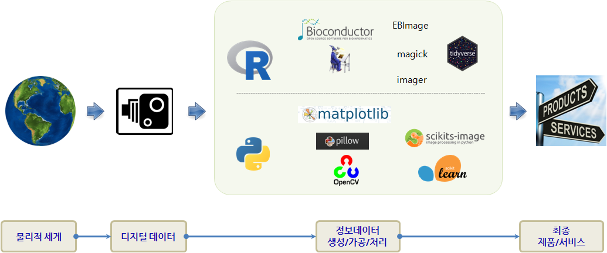

xwMOOC 고생대 프로젝트
고생대 삼엽충의 전성기를 재현
기계와의 경쟁을 준비하며…
“The future is here, it’s just not evenly distributed yet.”
- William Gibson

물리적 세계를 다양한 카메라 기술을 사용해서 디지털 데이터로 변환을 한 후에 이를 최종상품 형태로 제공하기 전에 다양한 시각정보를 가공, 처리, 생성하는 과정을 거치게 된다. 만약 파이썬 언어로 이를 통합적으로 구성할 경우를 살펴보자.
고생대 참엽충의 전성기 재현하는데 사용되는 파이썬 팩키지는 다음과 같다. 1
파이썬 컴퓨터 비전 도구 모음
- 맨손으로 시작
- 입출력
- 이미지 처리
- 컴퓨터 비젼
학습 목차
- 준비 및 설치
- 컴퓨터 비젼 도구 없이 맨손으로
- 맛보기
- 프로젝트
- 이미지에 나온 책이 몇개
- 얼굴인식-Cascade
- 자동차 탐지
- Scikit-Image
xwMOOC 오픈 교재